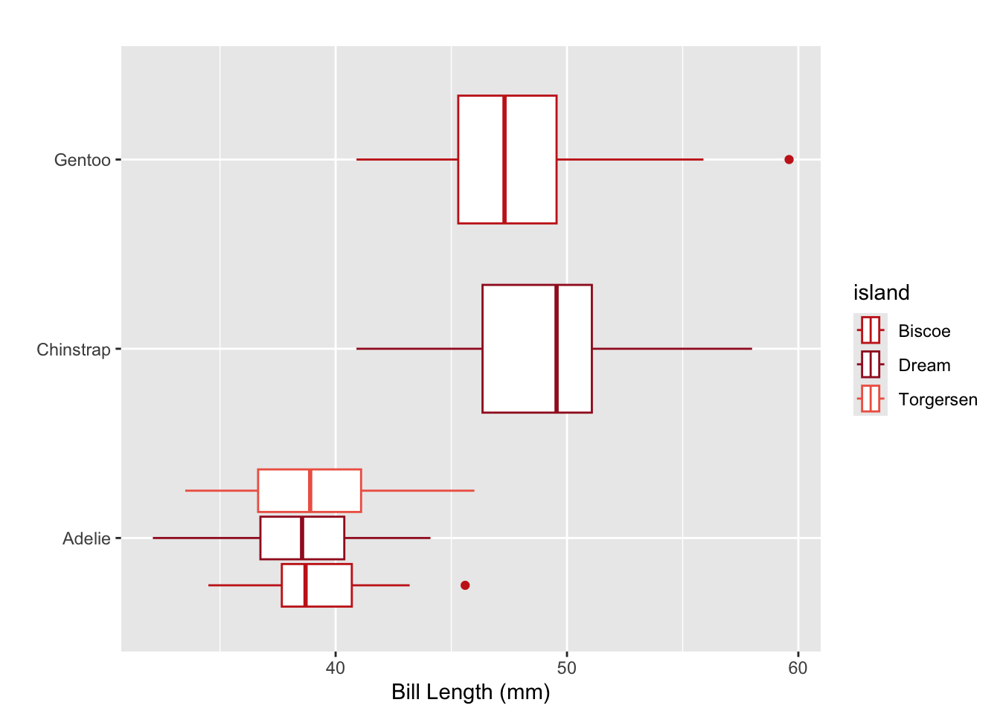
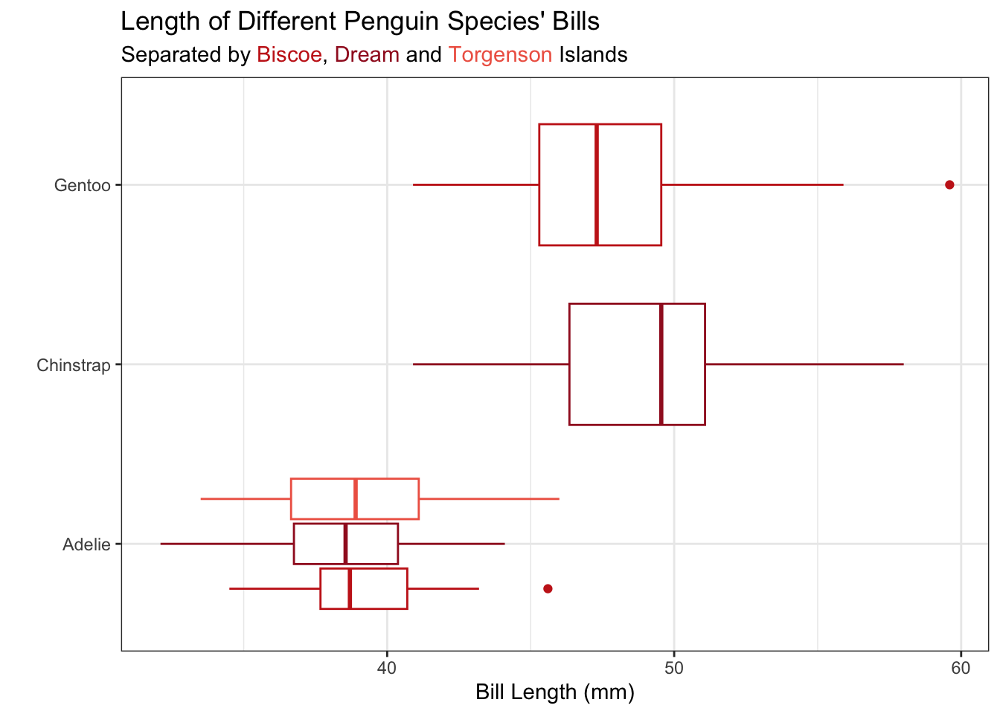

untitled_red <- c("#c8251d", "#a11b26", "#ef6552")Challenge 2: Spicing things up with ggplot2
Part One: Set-up
Accessing the Challenge
Download the template Challenge 2 Quarto file here: challenge-2-student.qmd
Important
Be sure to save the file in the Lab 2 folder, inside your Week 2 folder, inside your STAT 331 folder!
Directions
For this week’s Challenge, you will have two different options to explore. I’ve arranged these options in terms of their “spiciness,” or the difficulty of completing the task. You are only required to complete one task, but if you are interested in exploring more than one, feel free!
This is a great place to let your creativity show! Make sure to indicate what additional touches you added, and provide any online references you used.
Tip
For this challenge you will be modifying the code you wrote for Lab 2 – we will be modifying the box plot of weights by species!
Medium: Exploring Colors
The built-in ggplot() color scheme may not include the colors you were looking for. Don’t worry – there are many other color palettes available to use!
You can change the colors used by ggplot() in a few different ways.
Manual Specification
Add the scale_color_manual() or scale_fill_manual() functions to your plot and directly specify the colors you want to use. You can either:
define a vector of colors within the
scalefunctions (e.g.values = c("blue", "black", "red", "green")) ORcreate a vector of colors using hex numbers and store that vector as a variable. Then, call that vector in the
scale_color_manual()function.
Here is an example color schemes from my favorite Rothko painting:
Note
I figured out what hex colors to use with this image color picker app.
ggplot(data = penguins,
mapping = aes(x = bill_length_mm, y = species, color = island)
) +
geom_boxplot() +
scale_color_manual(values = untitled_red) +
labs(x = "Bill Length (mm)",
y = "",
title = "",
legend = "Island")
Package Specification
While manual specification may be useful for some contexts, it can be a real pain to handpick 5+ colors. This is where color scales built-in to R packages come in handy! Popular packages for colors include:
RColorBrewer– change colors by usingscale_fill_brewer()orscale_colour_brewer().viridis– change colors by usingscale_colour_viridis_d()for discrete data,scale_colour_viridis_c()for continuous data.ggsci– change colors by usingscale_color_<PALNAME>()orscale_fill_<PALNAME>(), where you specify the name of the palette you wish to use (e.g.scale_color_aaas()).
Note
This website provides an exhaustive list of color themes available through various packages.
For this challenge you are expected to use this information to modify the boxplots you created Lab 2. First, you are to color the boxplots based on the variable
sex. Next, you are to change the colors used forsexusing either manual color specification or any of the packages listed here (or others!).
Spicy: Exploring Themes
Themes are another vital component to creating clear plots. During lecture, Dr. Theobold mentioned that they like using theme_bw() for a built-in theme, since it has a white background and easy to see grid lines. However, there are SO many more ways you can control the appearance of a plot using the theme() function.
For this challenge you are expected to use the
theme()function to modify at least two aspects of your plot, with the goal of making your plot clearer to the reader. You need to explain why you made the decisions you did.
Some ideas you might consider:
- changing the size of the font to make your plot titles more readable
- changing the font in your plot to be your favorite font (remember it needs to improve the plot ;) )
- removing the minor grid lines (since they can be a bit distracting)
- adjust spacing between axis title and labels
- remove axis ticks
- add borders to the plot
Hot: Embedding the Legend in the Plot Title
Some data scientists advocate that we should try to eliminate legends from our plots to make them more clear. Legends cause a reader’s eye to stray from the plot, which can make it more difficult to understand. There are a few ways to do this, but this week we’re going to explore how to embed the legend in the plot title.
Embedding Legend in Plot Title
The ggtext package allows you to add hex colors and other HTML elements (e.g., italics, boldface) to plot titles. The process involves two main steps:
Wrap your text in HTML tags within the
labs()function.Tell ggplot to render the HTML by adding
plot.title = element_markdown()inside thetheme()function.
Let’s see how this can look! I’ve added the hex colors for the islands to the subtitle of my plot:
ggplot(data = penguins,
mapping = aes(x = bill_length_mm, y = species, color = island)
) +
geom_boxplot() +
scale_color_manual(values = untitled_red) +
labs(x = "Bill Length (mm)",
y = "",
title = "Length of Different Penguin Species' Bills",
subtitle = "Separated by <span style='color: #c8251d;'>Biscoe</span>, <span style='color: #a11b26;'>Dream</span> and <span style='color: #ef6552;'>Torgenson</span> Islands") +
theme_bw() +
theme(
legend.position = "none",
plot.subtitle = element_markdown()
)
Notice that the subtitle is still specified as a string. Inside the string there are HTML elements (<span>) that declare the colors of the text. For example, <span style='color: #c8251d;'>Biscoe</span> declares that the text “Biscoe” should be printed with the color #c8251d. The beginning of the span (<span) and the end of the span (</span>) declare when the coloring starts and ends.
For this challenge you are expected to use this information to modify the boxplots you created in Lab 2. First, you are to color the boxplots based on the variable
sex. Next, you need to move the legend colors for each level ofsexinto the plot title or subtitle. Finally, you are expected to use thetheme()function to remove the color legend from the plot, since it is no longer needed!
Challenge 2 Submission
For Lab 2 you will submit only your HTML file. Your HTML file is required to have the following specifications in the YAML options (at the top of your document):
- have the plots embedded (
embed-resources: true) - include your source code (
code-tools: true) - include all your code and output (
echo: true)
If any of the options are not included, your Lab 2 or Challenge 2 assignment will receive an “Incomplete” and you will be required to submit a revision.
In addition, your document should not have any warnings or messages output in your HTML document. If your HTML contains warnings or messages, you will receive an “Incomplete” for document formatting and you will be required to submit a revision.